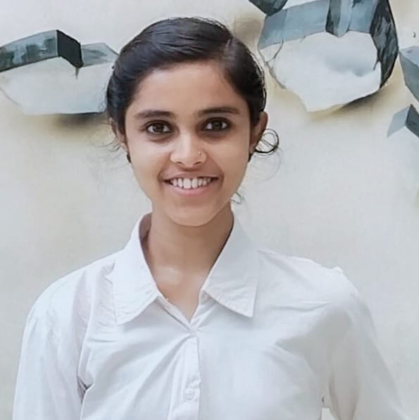
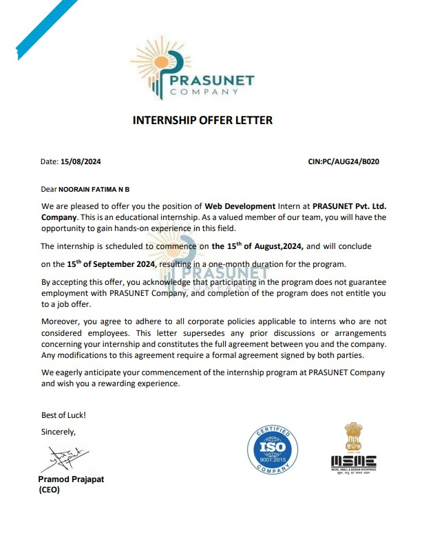

About Me
Hello! I'm Noorain Fatima N B, a web developer with expertise in front-end and back-end technologies. I love building responsive and dynamic websites that offer an excellent user experience.
Education
B.E - CSE
Cambridge Institute Of Technology
CGPA: 9.23 (Till 6th Sem)
2021-2025
Pre-University
St. Anne's PU College
PCMB - 89%
2019-2021
High School
Assisi School (CBSE) - 83%
2014-2019
C.D.O Jain School (State Board)
2007-2014
Professional Experience
Comedkares Innovation Hub
Role: Intern
Domain: Social Connect And Responsibility
Duration: Oct 2022 - Nov 2022
At Comedkares Innovation Hub, I developed a Grain Dispenser and Separator prototype, applying automation and sensor technology to enhance agricultural solutions. I also worked on smaller projects like a Mind Game using Arduino, a Heart Disease Detector, a Sound Detector, and more.
.jpg)
Samsung Innovation Hub
Role: Intern
Domain: IoT
Duration: Nov 2023 - Feb 2024
At Samsung Innovation Campus, I gained in-depth knowledge of IoT, working with sensors and microcontrollers like Arduino. My projects included practical automation and data processing solutions, enhancing my technical expertise in IoT.
.jpg)
Prasunet
Role: Intern
Domain: Web Development
Duration: Aug 2024 - Sep 2024
At Prasunet, I worked on a Responsive Landing Page, a Stopwatch Web Application, and a Tic-Tac-Toe Web Application with AI and player-vs-player modes. I also created a Personal Portfolio Website with modern design and clean code.
